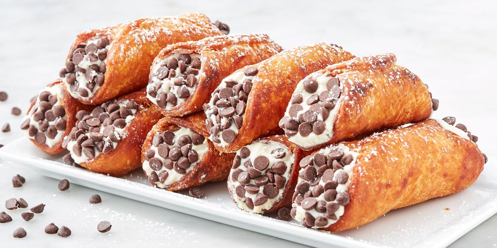

How To Make Cannoli
Ingredients
Cannoli Shell
- Unbleached all-purpose flour
- Granulated sugar
- Salt
- Unsalted butter
- Marsala wine
- Egg and egg white
- Vegetable oil
Cannoli Filling
- Whole milk ricotta
- Powdered sugar
- Mini chocolate chips
- Cinnamon
- Pistachios (optionals)
Directions
How To Make The Shell
- Mix dry ingredients in a food processor.
- Pulse in butter.
- Add marsala wine and egg and pulse to bring together.
- Transfer to oiled bowl, cover and rest dough.
- Heat oil in pot.
- Roll dough out very thin on a floured surface.
- Cut into rounds or ovals (about 4-inches each).
- Wrap rounds around greased cannoli forms, brush top or bottom edge with egg white to seal shut.
- Fry in preheated oil until golden brown and crisp, about 1 – 2 minutes.
- Remove cannoli shells and drain on paper towels.
- Remove shells from forms, let forms cool and repeat process.
- Make cannoli filling.
- Let shells cool completely then fill with cannoli filling.
How To Make The Filling
- Strain ricotta.
- Add ricotta, sugar, chocolate chips and cinnamon to a mixing bowl.
- Fold and stir mixture to blend.

Recommended Recipes
Cannoli Cupcakes
Cannoli Dip
Cannoli Ice Cream